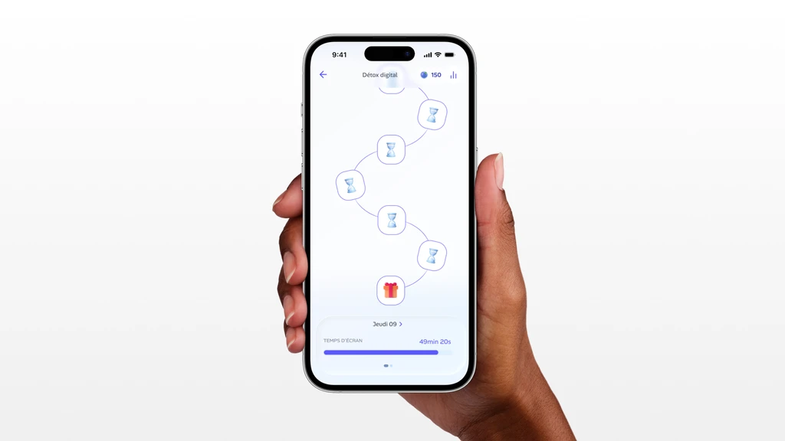
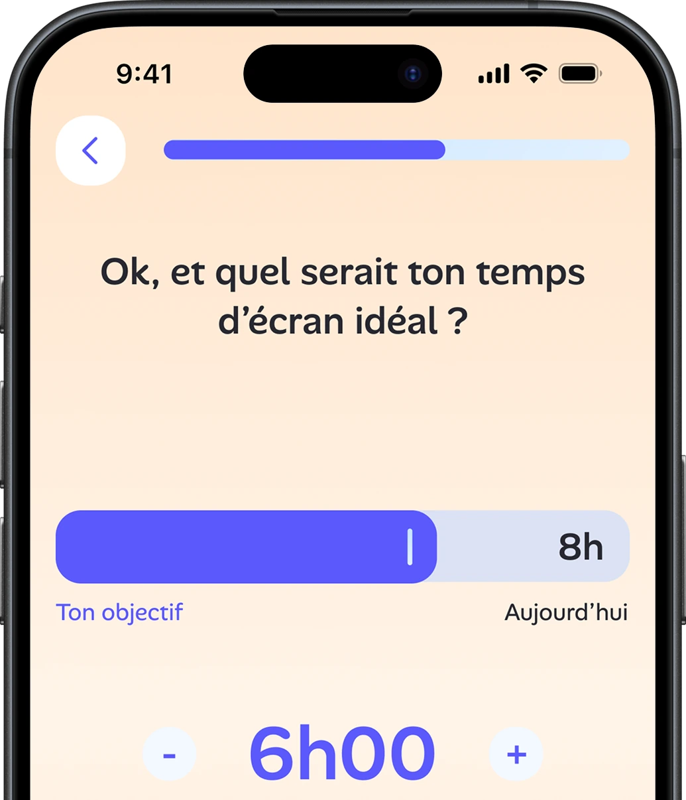
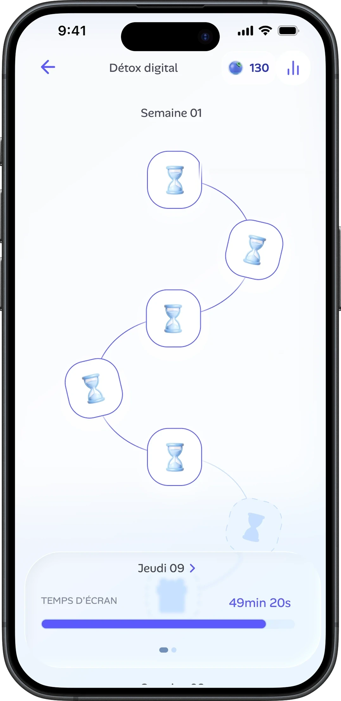
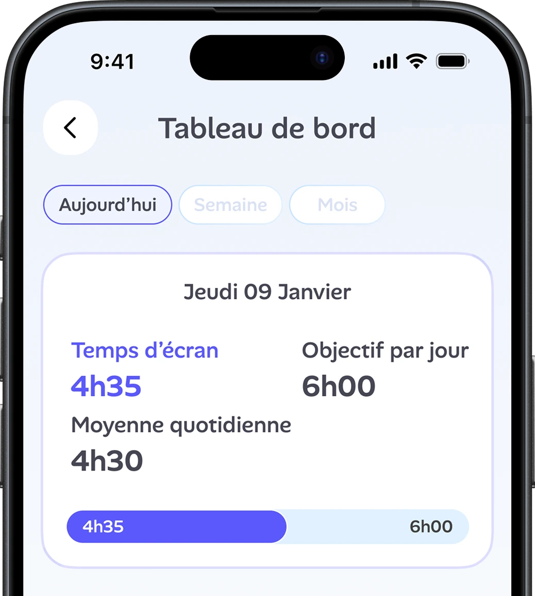
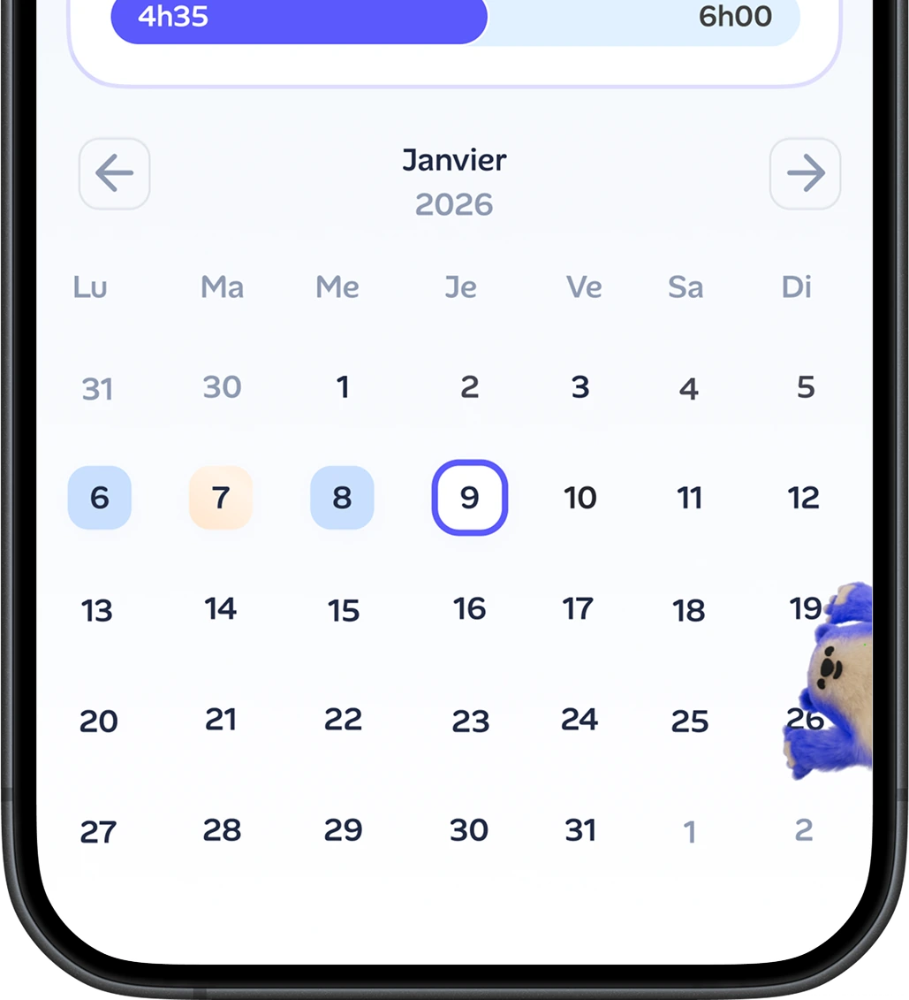
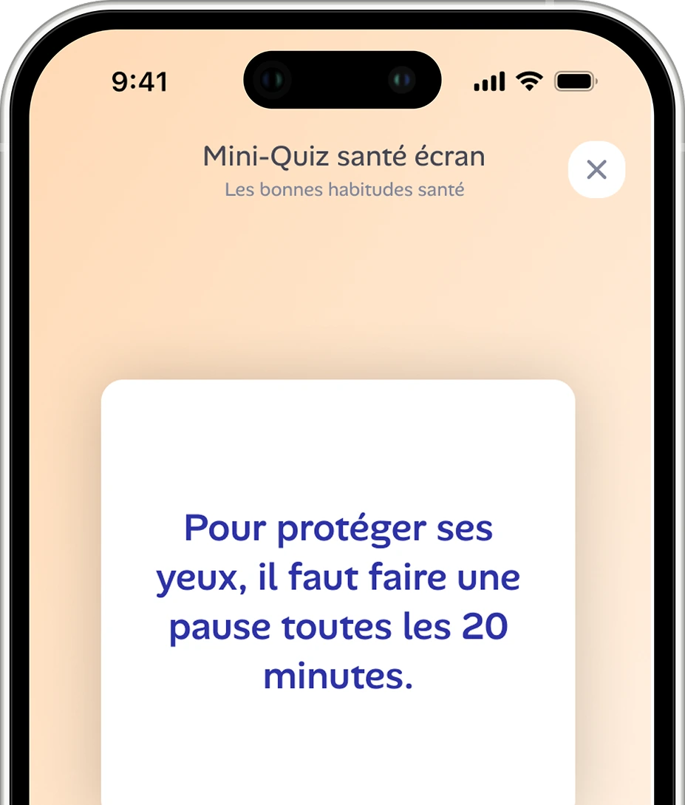
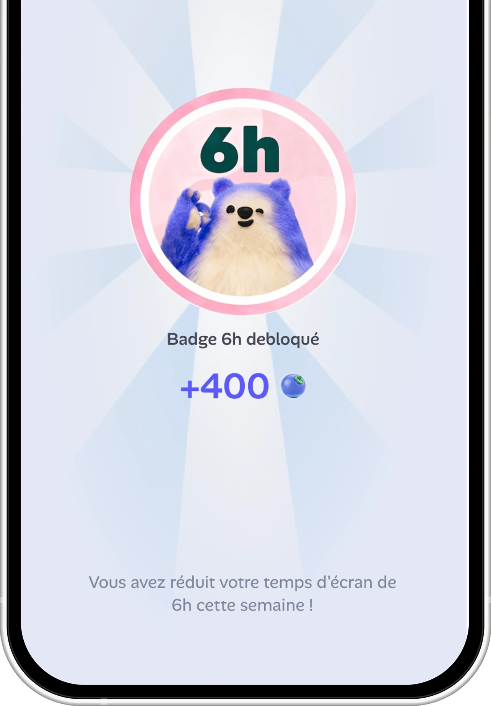

Back
Alan · 2026 · Showcase
Alan
Product designer, with a PM and engineers
Alan wanted to help its members build a healthier relationship with their screens. I designed the experience from UX to visual design and prototype.

Less screen time is a streak, not a sacrifice.
Goals, a daily path, streaks and rewards. Five screens, in the order a member meets them.
Set your goal
Onboarding opens with one question: what would your ideal daily screen time be?

the gap, beforeyou commit your target
The map
The heart of the experience: a day-by-day path.

each node is a day a path you can see today, liveDashboard
A place to reflect rather than scroll.


Quiz
Short true-or-false questions about screen habits, in the voice of Alan's health mission.

true or false?Rewards
Progress pays in Alan's own currency.

6h less,one badge Blueberries,
Alan's currency
Team
- Product manager at Alan
- Engineers at Alan
- Matthieu Product designer